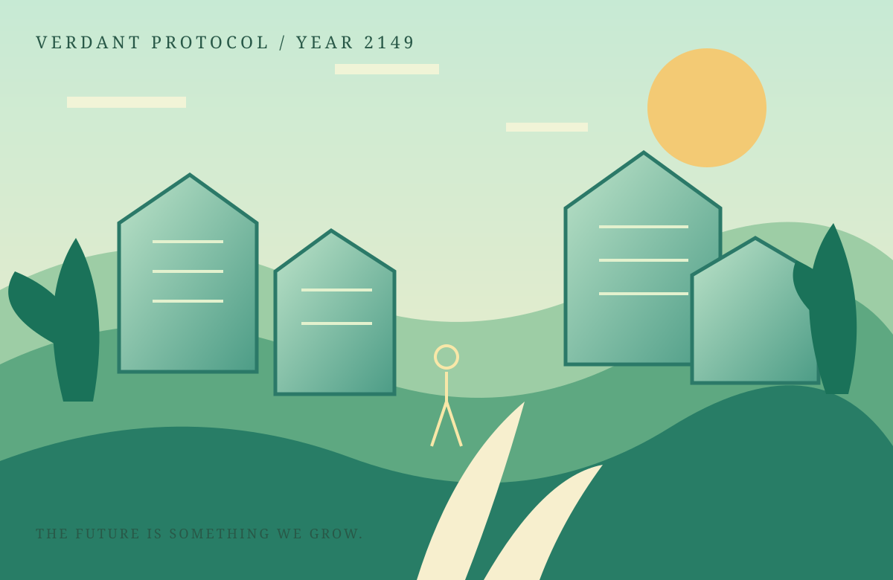

LET WATER MOVE
Restore wetlands and floodplains before building walls. Nature often solves a problem more elegantly than concrete.
The old grid is gone. What remains is soil, rain, neighbors, and a thousand small decisions. Rebuild a city that can breathe — without turning the living world into another resource to exhaust.

CONCEPT / 010RESTORATION ZONE / PHASE 03Choose a district to inspect its needs. Progress is built from relationships between systems, not a single score.
Every neighborhood is part of the same ecosystem. Select a numbered marker to read the field notes and choose what to restore next.
Adjust investment priorities. The meter is a teaching aid: a resilient city balances all three, rather than maxing out one at the expense of others.
Restore wetlands and floodplains before building walls. Nature often solves a problem more elegantly than concrete.
Energy storage, repair workshops, and public tools create resilience that isolated upgrades never will.
Wildlife corridors, quiet patches, and unplanned gardens are not wasted land. They're how a system stays alive.
A closer look at the design decisions that make this world work — from its central fantasy to the details that give it texture.
Energy, water, biodiversity, and quality of life affect each other in understandable ways.
A repair café can matter as much as a power station when a crisis hits.
Neighborhoods visually transform over time as ecosystems recover and shared spaces fill with life.
This is an interactive portfolio concept. Explore the page, test the controls, and imagine where the world could go next.